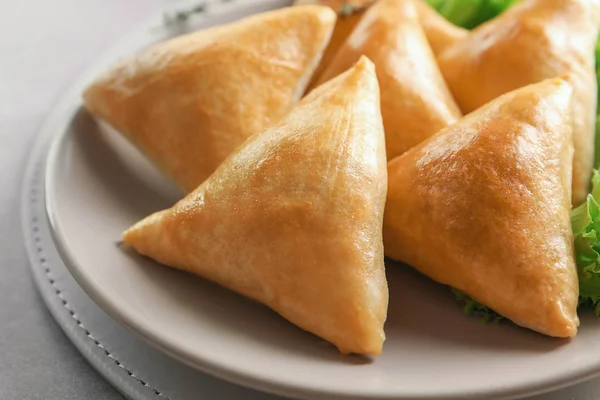

Samosa

Description
A samosa is a fried or baked South Asian pastry with a savory filling, including ingredients such as spiced potatoes, onions, and peas.
Flaky and crunchy samosas are one of the most popular street food snack in North Indian cuisine.
Samosas are often accompanied by chutney, and have origins in medieval times or earlier.
Samosas are a popular entrée, appetizer, or snack in the cuisines of South Asia, the Middle East, Central Asia, East Africa and their South Asian diasporas.
Ingredients
- 4 potatoes, peeled and cubed
- ¼ cup oil
- 2 small onions, finely chopped
- 1 teaspoon salt
- ½ teaspoon ground allspice
- 2 roma (plum) tomatoes, finely chopped
- ½ cup frozen peas
- 4 prepared pie crusts
- 2 egg whites, beaten, or as needed
Steps
-
Place potatoes into a large pot and cover with salted water; bring to a boil.
Reduce heat to medium-low and simmer until tender, about 20 minutes. Drain and transfer potatoes to a bowl; coarsely mash.
-
Preheat oven to 400 degrees F (200 degrees C).
-
Heat oil in a skillet over medium-high heat; cook and stir onions, salt,allspice,until onion is lightly browned, about 5 minutes.
Remove skillet from heat and stir tomatoes and peas into onion mixture; pour into mashed potatoes and thoroughly mix. Cool completely.
-
Cut each pie crust into 8 even triangles. Spoon filling onto the wide end of each triangle;
fold corners over filling creating a triangular 'hat' shape. Pinch the dough together to form a seal.
Brush egg white over each samosa and arrange on a baking sheet.
-
Bake in the preheated oven until samosas are golden brown, about 15 minutes.